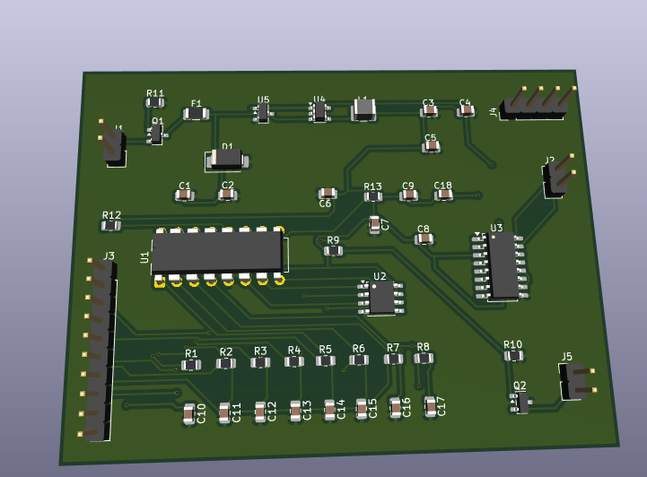

Projektdokumentation – Elektronik-Neubau

KiCad-Platine – 2 Layer, SMD-Bestückung via JLCPCB, Through-Hole manuell
Neubau der Elektronik eines Vogelstimmenkastens am Waldlehrpfad. Besucher drücken einen von 8 Tastern und hören die zugeordnete Vogelstimme (~10 s). Betrieb über 12-V-Bleibatterie mit extrem niedrigem Ruhestrom. Gehäuse, Taster und Lautsprecher aus dem Bestand werden weiterverwendet.
| ID | Anforderung |
|---|---|
| F01–F02 | 8 Taster, je eine feste Vogelstimme |
| F03 | Wiedergabe startet innerhalb 0,5 s |
| F06 | Sounds per PC-Tool austauschbar (USB/J4) |
| F10 | Elektromechanischer Impulszähler (Gesamtzähler) |
| E01–E03 | 12-V-Batterie, Ruhestrom <10 µA, ~1 Jahr Laufzeit |
Von vier geprüften Optionen wurde Option D: WT588D-16P ohne Mikrocontroller gewählt. Keine Firmware-Entwicklung, geringste Bauteilanzahl, schnellste Reaktionszeit (~50 ms), Ruhestrom ~1–3 µA.
12V Batterie ──→ Verpolung (Q1) ──→ PTC (F1) ──→ TVS (D1)
│
├── UVLO (U5 SGM809) ──→ Enable Buck
│
└── Buck U4 TPS62203 ──→ 3,3 V
│
┌───────────────────────────┼───────────────────────────┐
│ │ │
WT588D U1 ◄──SPI──► W25Q128 U2 │ PAM8403 U3 ──► Lautsprecher
KEY0–7 ◄── 8 Taster (J3) │ ▲
PWM ── RC-Filter ────────────────┘ │
BUSY ── Q2 2N7002 ──► Impulszähler (J5) │
| Funktion | Bauteil | LCSC |
|---|---|---|
| Audio-IC | WT588D-16P (DIP, manuell) | — |
| Flash | W25Q128JVSIQ | C97521 |
| Verstärker | PAM8403DR-H | C17337 |
| Buck 12→3,3 V | TPS62203DBVR | C9051 |
| UVLO | SGM809 | C699615 |
| Verpolung | SI2301CDS (P-MOSFET) | C10487 |
| Zähler-Treiber | 2N7002 (BUSY-Signal) | C8545 |
| TVS / PTC | SMAJ15A / BSMD1206 500 mA | C23424 / C7202014 |
Die Platine ist das zentrale Steuer- und Wiedergabemodul des Vogelstimmenkastens. Sie verbindet die 12-V-Batterie, die 8 Taster am Gehäuse, den Lautsprecher und den Impulszähler zu einer Einheit. Es gibt keinen separaten Mikrocontroller und keine Firmware – der WT588D übernimmt Tastererkennung, Audio-Dekodierung und Wiedergabe in einem Chip.
Drückt der Besucher während einer laufenden Wiedergabe einen anderen (oder denselben) Taster, bricht der WT588D die aktuelle Tonsequenz ab und startet den neuen Sound – es gibt keine gleichzeitige Wiedergabe mehrerer Stimmen.
Die Platine ist in fünf funktionale Bereiche gegliedert. Auf dem 3D-Bild entsprechen diese den markierten Bauteilgruppen (U1–U5, J1–J5, Q1–Q2, R/C-Bänke).
Aufgabe: Sichere Versorgung der gesamten Elektronik aus der 12-V-Batterie und Erzeugung der 3,3-V-Betriebsspannung für alle Halbleiter.
| Bauteil | Funktion im Betrieb |
|---|---|
| J1 (Batterie) | Anschluss der 12-V-Bleibatterie (+/−). Zentrale Einspeisung aller Leistung. |
| Q1 (SI2301, P-MOSFET) | Verpolungsschutz: Bei falscher Polung am Batterieanschluss bleibt der Stromkreis unterbrochen – die Platine wird nicht beschädigt. |
| F1 (PTC 500 mA) | Rücksetzende Überstromsicherung. Begrenzt Kurzschlussströme und stellt sich nach Abkühlen selbst wieder her. |
| D1 (SMAJ15A TVS) | Überspannungsschutz am 12-V-Eingang (z. B. induktive Spannungsspitzen, ESD). Leitet Störimpulse sicher ab. |
| U5 (SGM809 UVLO) | Tiefentladeschutz der Batterie: Fällt die Batteriespannung unter die Schwelle (~10,5 V), wird der Buck-Converter abgeschaltet. Schützt den Akku vor Schäden. |
| U4 + L1 (TPS62203) | Abwärtswandler (Buck) von 12 V auf 3,3 V. Versorgt WT588D, Flash, Verstärker. Sehr geringer Eigenverbrauch (~1 µA im Standby). |
| C1–C4, C8 | Ein- und Ausgangskondensatoren des Buck-Wandlers sowie Puffer am Verstärker. Stabilisieren die Spannung bei Lastsprüngen (Audio-Anlauf). |
Signalweg: J1 → Q1 → F1 → V12_PROT → [U5 überwacht] → U4/L1 → 3,3 V → alle ICs. Der Impulszähler wird direkt aus V12_PROT (12 V) versorgt, da seine Spule 12 V benötigt.
Aufgabe: Speichern, Abspielen und Verstärken der Vogelstimmen.
| Bauteil | Funktion im Betrieb |
|---|---|
| U1 (WT588D-16P) | Herzstück der Platine. 8 Key-Eingänge, SPI-Schnittstelle zum Flash, PWM-Audioausgang, BUSY-Ausgang. Kein Programmcode nötig – Konfiguration erfolgt einmalig per PC-Tool. |
| U2 (W25Q128) | 128 Mbit SPI-Flash (16 MB). Speichert bis zu 8 Audiodateien im WT588D-Format. Keine SD-Karte – robust gegen Feuchtigkeit und Vibration. |
| R13, C9, C18 | RC-Tiefpassfilter + Koppelkondensator: Wandeln das PWM-Signal des WT588D in ein analoges Audiosignal um und entfernen den Gleichspannungsanteil. |
| U3 (PAM8403) | Class-D-Verstärker (Mono über linken Kanal). Treibt den Lautsprecher mit 2–3 W bei 3,3 V Versorgung. BTL-Ausgang an J2 – keine Ausgangsseite darf mit GND verbunden werden. |
| C5–C7 | Abblockkondensatoren direkt an U1, U2 und U3. Unterdrücken Hochfrequenz-Störungen und verbessern die Signalqualität. |
| J2 (Lautsprecher) | Anschluss des Gehäuse-Lautsprechers (4–8 Ω, 2–3 W empfohlen). |
Signalweg Audio: Taster → U1 liest U2 → PWM → R13/C9/C18 → U3 → J2 → Lautsprecher.
Aufgabe: Anbindung der 8 externen Taster am Gehäuse-Panel an die Key-Eingänge des WT588D.
| Bauteil | Funktion im Betrieb |
|---|---|
| J3 (1×10) | Pin 1–8: Signalleitungen zu den 8 Tastern. Pin 9: gemeinsame Masse (GND). Pin 10: optional 3,3 V (z. B. für LED-Anzeige). |
| R1–R8 (je 100 Ω) | Serienwiderstände zwischen Stecker und WT588D. Begrenzen Strom bei Kurzschluss und schützen die Eingänge vor ESD. |
| C10–C17 (je 100 nF) | Entprell-Kondensatoren pro Taster (RC-Glied mit R1–R8). Filtern mechanisches Prellen der Taster (~10 µs Zeitkonstante). |
Jeder Taster ist ein Schließer gegen Masse: Im Ruhezustand liegt am WT588D-Eingang HIGH (interner Pull-Up). Beim Drücken wird der Pin auf LOW gezogen – der WT588D startet den zugeordneten Sound. Die Zuordnung Taster → Vogelstimme wird beim Programmieren im PC-Tool festgelegt.
Aufgabe: Erfassung jeder abgespielten Vogelstimme über einen elektromechanischen Gesamtzähler.
| Bauteil | Funktion im Betrieb |
|---|---|
| U1 BUSY (Pin 11) | Geht während jeder Wiedergabe auf HIGH, sonst LOW. Dient als zuverlässiges „Ton läuft“-Signal. |
| Q2 (2N7002, N-MOSFET) | Schaltet bei BUSY = HIGH und leitet Strom durch die Zählerspule. R10 (10 kΩ) hält das Gate im Ruhezustand sicher auf LOW. |
| J5 (1×2) | Pin 1: 12 V (V12_PROT) zur Zählerspule. Pin 2: Schalterkontakt über Q2 nach GND. Pro Wiedergabe ein Zählimpuls (~120 mA, simuliert bestätigt). |
Vorteil der BUSY-Lösung: Es werden nur echte Wiedergaben gezählt, nicht einzelne Taster-Prellimpulse oder Fehlbetätigungen ohne Ton.
Aufgabe: Einmaliges (oder wiederholtes) Laden der Vogelstimmen auf den WT588D/Flash.
| Bauteil | Funktion im Betrieb |
|---|---|
| J4 (1×4) | Stiftleiste für den Hersteller-USB-Programmieradapter. Im Normalbetrieb nicht belegt. Ermöglicht das Brennen neuer Audiodateien ohne Löten. |
| U1 (im Sockel) | WT588D wird im IC-Sockel montiert, damit er bei Defekt oder Sound-Update leicht getauscht werden kann. |
Audioformat für das PC-Tool: 16 kHz, Mono, 16 Bit WAV. Modus: Key Trigger (One Key One Voice), 8 Dateien.
Der WT588D benötigt im Standby nur ~1–3 µA. Der TPS62203 hat ebenfalls extrem niedrigen Quiescent Current. Zusammen mit dem UVLO-Schutz ergibt sich eine Batterielebensdauer von etwa einem Jahr ohne Nachladen – abhängig von Besucherfrequenz und Batteriekapazität. Während der Wiedergabe steigt der Strom kurzzeitig an (Flash-Lesen, Verstärker, Lautsprecher); der Buck-Wandler hält 3,3 V dabei stabil (LTspice-Simulation bestätigt).
KiCad 8, 2-Lagen-Platine (~80×60 mm), GND-Flächen F.Cu + B.Cu, Freerouting. Prüfungen: ERC 0 Fehler, DRC 0 Fehler.
| Ref | Belegung | Anschluss extern |
|---|---|---|
| J1 | 1×2 | 12-V-Batterie (+/−) |
| J2 | 1×2 | Lautsprecher (BTL, keine Seite an GND!) |
| J3 | 1×10 | Pin 1–8: Taster, Pin 9: GND, Pin 10: 3V3 |
| J4 | 1×4 | WT588D-Programmierung (PC-Tool) |
| J5 | 1×2 | Impulszähler 12 V (Pin 1: +12 V, Pin 2: Schalter) |
| U1 | DIP-16 | WT588D im IC-Sockel (manuell einlöten) |
| Taste | J3 Pin | WT588D | Sound |
|---|---|---|---|
| 1 | 1 | KEY0 | Vogel 1 |
| 2 | 2 | KEY1 | Vogel 2 |
| 3 | 3 | KEY2 | Vogel 3 |
| 4 | 4 | KEY3 | Vogel 4 |
| 5 | 5 | KEY4 | Vogel 5 |
| 6 | 6 | KEY5 | Vogel 6 |
| 7 | 7 | KEY6 | Vogel 7 |
| 8 | 8 | KEY7 | Vogel 8 |
| Position | Details |
|---|---|
| JLCPCB | 5 Platinen, SMT Assembly Top, Paket: hardware/Gerber/vogelstimmen-jlcpcb.zip |
| Manuell löten | U1 WT588D, J1–J5 (siehe nicht-bestueckt.txt) |
| Simulation | LTspice: Versorgung, Audiofilter, Zähler (~120 mA Impuls bestätigt) |
| Phase | Status |
|---|---|
| Anforderungen & Architektur | ✓ abgeschlossen |
| Schaltplan KiCad (ERC) | ✓ 0 Fehler |
| PCB-Layout (DRC) | ✓ 0 Fehler |
| LTspice-Simulation | ✓ durchgeführt |
| Gerber / BOM / CPL | ✓ exportiert |
| JLCPCB-Bestellung | ✓ bestellt (Platine + SMT) |
| Handlöt-Teile (WT588D, Stecker) | ○ ausstehend |
| Vogelstimmen programmieren | ○ ausstehend |
| Einbau & Inbetriebnahme | ○ ausstehend |
| Teil | Bezugsquelle |
|---|---|
| WT588D-16P DIP + IC-Sockel 16-pol | AliExpress |
| Stiftleisten 1×2, 1×4, 1×10 (2,54 mm) | Reichelt / Amazon |
| Impulszähler 12 V DC, 6-stellig | Amazon |
| Lautsprecher 4–8 Ω (falls neu) | Reichelt / Amazon |
Audio konvertieren: 16 kHz, Mono, 16 Bit WAV
scripts\convert-vogelstimmen.ps1 -InputDir "..." -OutputDir "..."
8 Dateien: vogel1.wav … vogel8.wav
Vor Ort klären: Lautsprecher-Impedanz, Einbauraum, Kabellängen, Befestigung, Feuchtigkeitsschutz.
| Prüfung | Erwartung |
|---|---|
| 12 V / 3,3 V | Kein Kurzschluss, 3,3 V am WT588D |
| 8 Taster | Je Sound innerhalb 0,5 s |
| Lautstärke | 2–3 m Entfernung gut hörbar |
| Impulszähler | +1 pro Wiedergabe (BUSY-Signal) |
| Ruhestrom | Batterie hält ~1 Jahr |
| Ordner / Datei | Inhalt |
|---|---|
docs/ | Lastenheft, Architektur, Bauteilliste, Anleitungen |
hardware/ | KiCad-Projekt, Gerber, BOM, CPL |
simulation/ | LTspice (.cir) |
scripts/ | Audio-Konvertierung für WT588D |